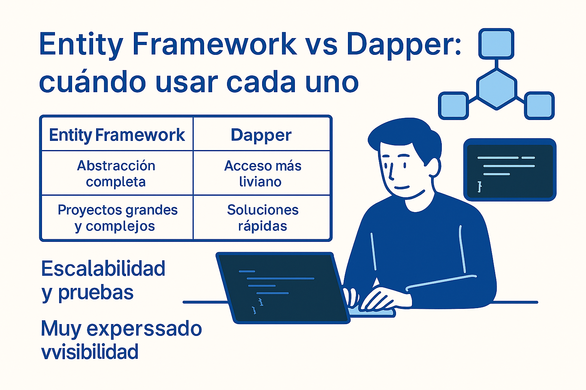
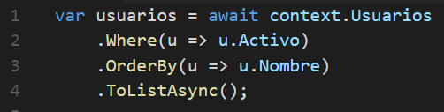
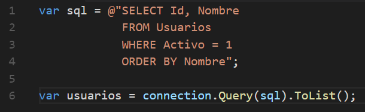

Entity Framework vs Dapper: cuándo usar cada uno
Backend · .NET · arquitectura · acceso a datos
Entity Framework y Dapper suelen presentarse como herramientas opuestas, y muchas veces la discusión se centra únicamente en rendimiento. En proyectos reales, especialmente empresariales, la decisión va mucho más allá de la velocidad.
El criterio, la mantenibilidad y la claridad para el equipo terminan siendo factores mucho más relevantes que unos pocos milisegundos.
En mi experiencia, Dapper encaja muy bien en proyectos pequeños o MVPs, mientras que Entity Framework resulta más adecuado en sistemas grandes, con múltiples desarrolladores, testing formal y una vida útil larga.
Un punto clave al usar Entity Framework
No es una buena práctica abusar de consultas LINQ con múltiples joins para consultas complejas o de alto volumen. En estos casos, es preferible dejar la lógica pesada en procedimientos almacenados bien optimizados a nivel de base de datos.
Una combinación sana en proyectos empresariales suele ser: Entity Framework para CRUD y dominio y procedimientos almacenados para consultas grandes o complejas. Estos procedimientos pueden invocarse desde Entity Framework mapeando entidades o usando métodos del contexto, de forma muy similar a consultar tablas.

Comparación práctica
| Aspecto | Entity Framework | Dapper |
|---|---|---|
| Abstracción | Alta (ORM completo) | Baja (SQL manual) |
| CRUD estándar | Eficiente y mantenible | Eficiente |
| Tiempo CRUD (100–1.000 registros) | ~5–20 ms | ~3–15 ms |
| Consultas grandes (1M+ registros) | No recomendado con LINQ complejo | Adecuado si el SQL está optimizado |
| Testing | Muy bueno | Más complejo |
| Mantenibilidad | Alta | Disminuye a largo plazo |
| Cambios de esquema | Más seguros (tipado) | Propensos a errores |
| Uso recomendado | Proyectos grandes | MVP / casos puntuales |
Nota: en CRUD tradicionales la diferencia es mínima; el rendimiento real depende más del diseño de consultas e índices que del ORM.
Ejemplo con Entity Framework

Ejemplo con Dapper

Una desventaja clave de Dapper
Al requerir SQL explícito, cualquier cambio en la estructura de la base de datos implica revisar consultas manualmente. En proyectos grandes esto suele convertirse en una fuente constante de errores y mantenimiento adicional.
Conclusión
Dapper es una gran herramienta para soluciones rápidas y MVPs. Entity Framework brilla en proyectos empresariales de largo plazo. Mezclarlos sin reglas claras suele generar confusión. El criterio y la claridad siempre pesan más que un benchmark aislado.